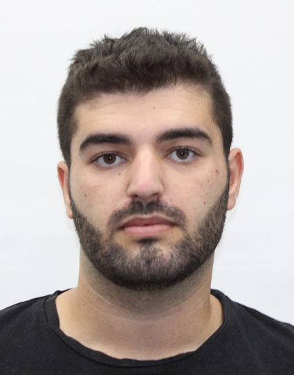

קורות חיים
קוראים לי נתן סבג ואני כרגע בשנא א בהנדסת אלקטרוניקה וחשמל
פרטים על עצמי
- טלפון:0542476553
- ארץ לידה: צרפת
- שנת עליה:2007
- נגישות: בעל רשיון נהיגה בתוקף
- מצב משפחתי: רווק
השכלה
- השכלה תיכונית בגרות מלאה 2012-2014: ישיבת נעם גבעת מרדכי
- הנדסאי אלקטרוניקה 2014-2016: מכללת קרית נוער
- :2016-2019 קורסים והסמכות
- קורס אופטיקה ,במהלך שירות הצבאי
- קורס מודיעין שדה,מצלמות במהלך השירות הצבאי
- מהנדס אלקטרוניקה וחשמל 2020-2024: מכללה להנדסה -עזריאלי
ניסיון תעסוקתי
- מלצרות 2014-2016:מסעדות חלביות: ביגה,לה סטורי,קפית
- מפקד טכנאי מערכות מודיעין שדה2016-2019:
:עבודה של שמונה חודשים בקבע שהייתה מאתגרת כמפקד,עבודה עם אחריות ,יוזמה וניהול צוות
- פיקוד והובלות צוות לתקלות בשטח
- אחריות לרווחת כלל חיילי הבסיס
- ביצוע בדיקה חודשית לכלל אמצעים האופטים
שירות צבאי
- טכנאי מערכות מודיעין שדה2016-2019: שחרור בדרגת סמל ראשון
- תיקון תקלות של אמצעי תצפית ומחשבים בשטח ובחמל אחריות לציוד יקר ערך ומסווג
- תאום ושיתוף פעולה עם גורמים אזרחיים
- מתן מענה טלפוני ופתרונות לרשתות מחשב
- מתן מענה מיידי ומהיר לתקלות בשטח- בגבול עוטף ירושלים והסביבה
- עבודת צוות עם חיילים ומפקדים
- תפקיד בעל סיווג בטחוני גבוה
שפות
- עברית:מעולה
- צרפתית:שפת אם
- אנגלית:בסיסית
- אזרחויות זרותצרפתית
{kind=link}